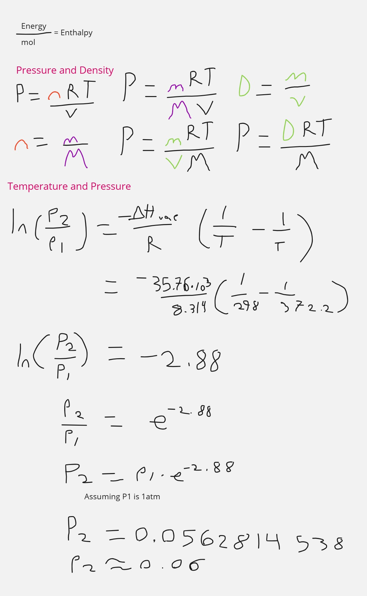
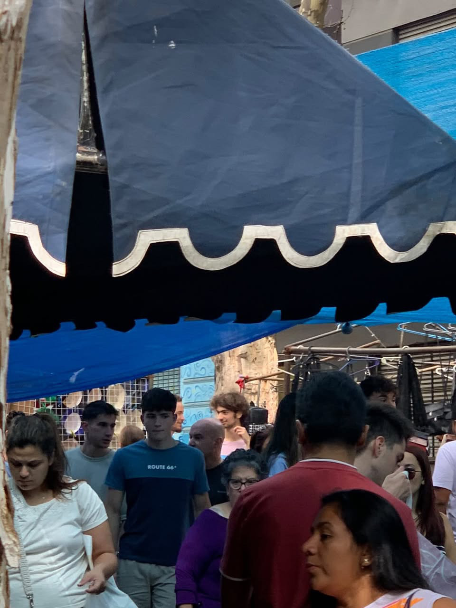
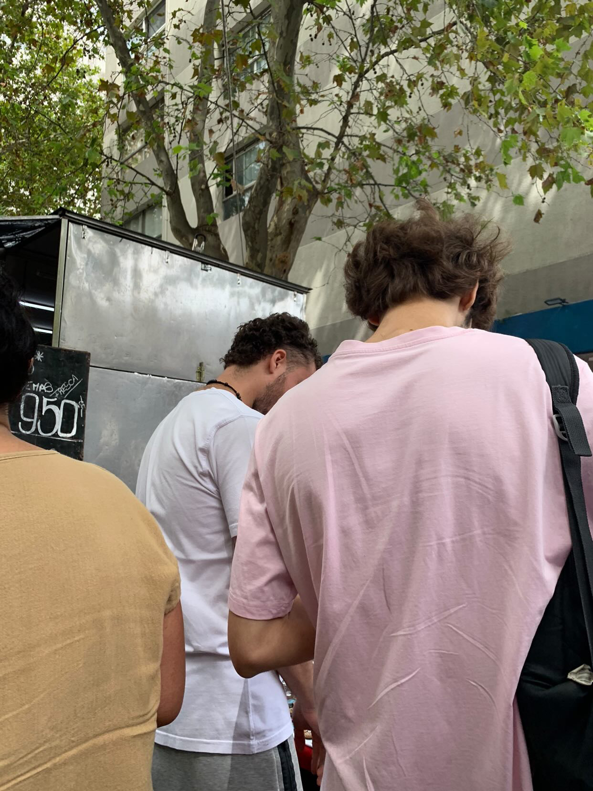
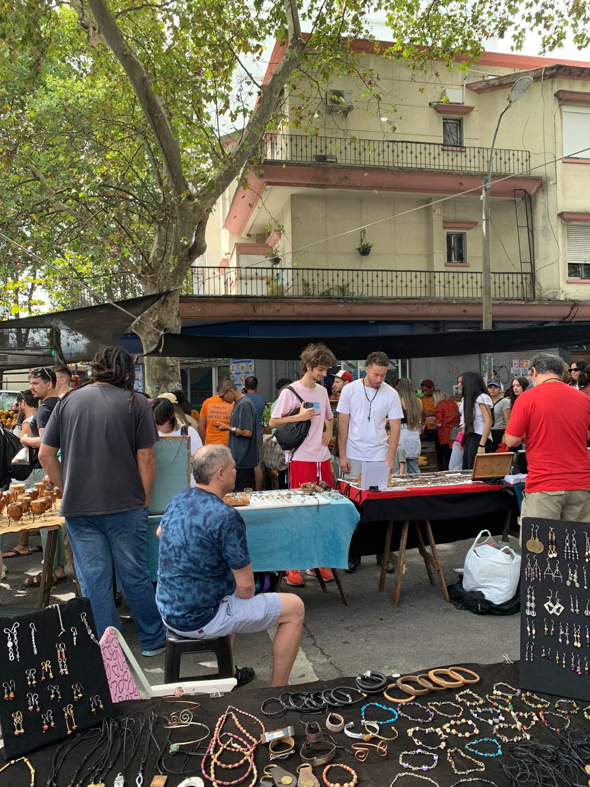
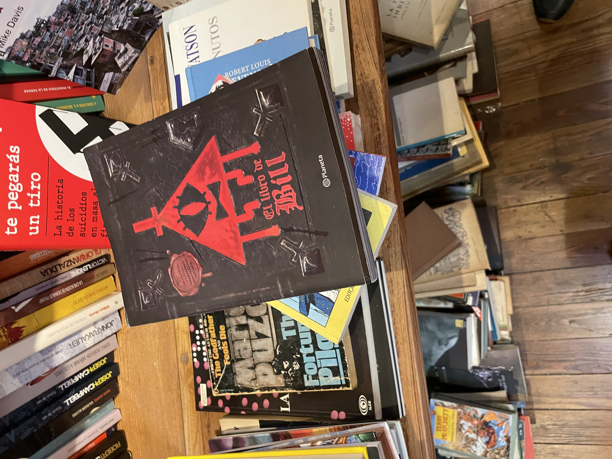
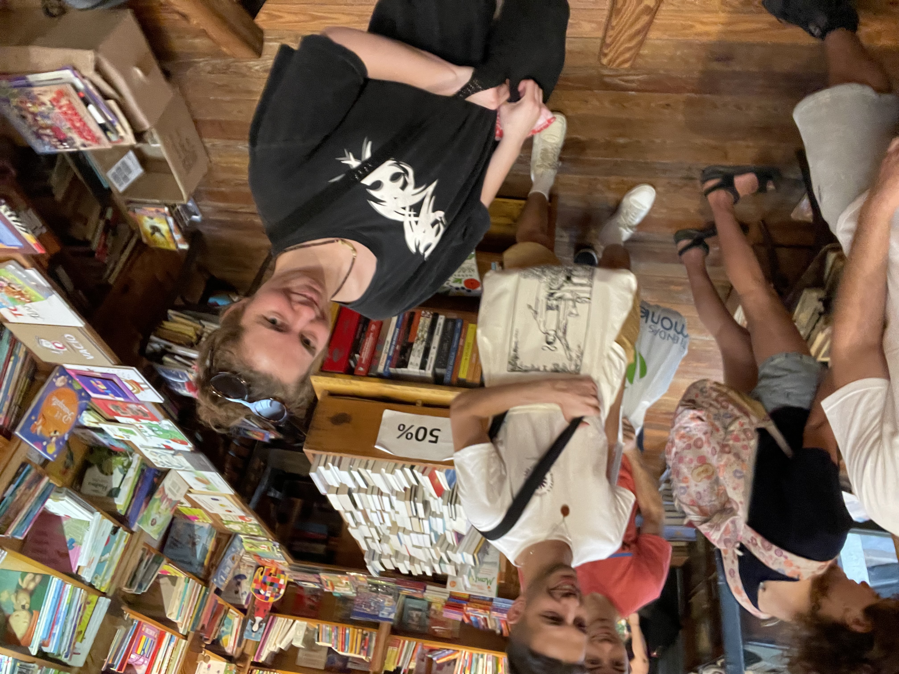
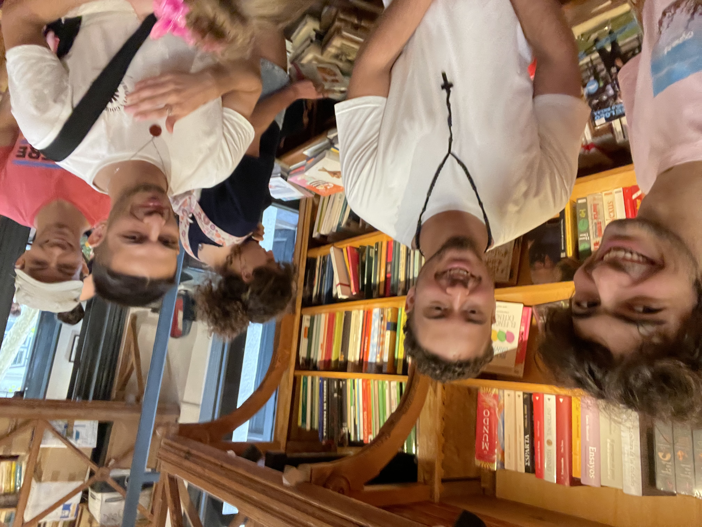
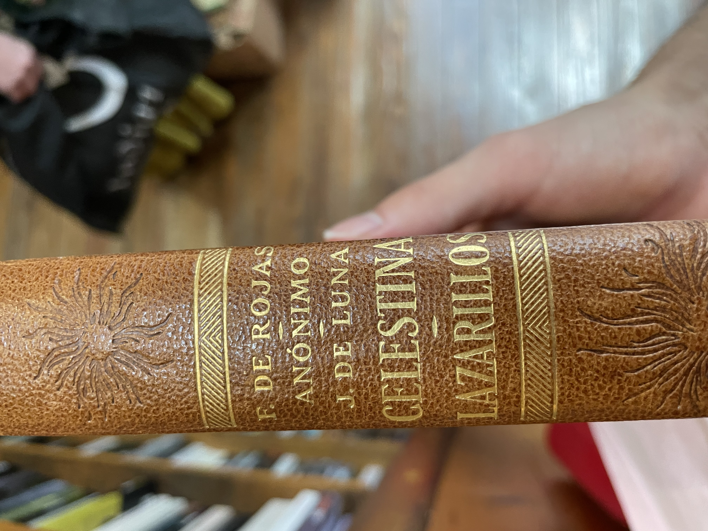

What's the story?
I don't know if you read the previous story, my incredible chronicle. I am pretty proud of it. Sometimes I made have done some mistakes, innacuracies, or assumptions, but overall I feel like it was accurate. But I am done trying to be accurate, I am going to write a chronicle from my own perspective, a new story.
So a lot has happened ever since the end of my first chronicle and my "diary" that I am doing right now. Alex is now in canada, Milla works at a graveyard, Sebs has a girlfriend, me and Sofe went to french classes, and many more things that I am not going to go over.
Just know that whenever I refer to a period of time between the last event in my previous chronicle(14/06/2024) and the first event in my diary of sorts(09/03/2025).
That being said, this diary is going to be a little different. I tried (probably failed) to be purely objective in my previous chronicle, however here I am not going to try, im just going to do and write whatever I want. Secondly, I might try making titles because it's fun. Also, in the chronicle I always talked in the third person, but not here, I will just talk from my
-
Date:
Climate:
Location:
Title:
-
Date:09/03/2025
Climate:Normal
Location:Uruguay->Argentina
Title:Rouph and Tumble
A lot of things have happened since the end of the chronicle, i have decided to pursue farmacy or some sort of chemistry. I kind of wanted to do music but given that my school didn't really teach me anything about music I thought it was a better idea to do something that I am more proficient on, chemistry. Also I have less chances of dying of starvation.
The plan is simple, I applied to several universities in the neatherlands, and if I get accepted to any of them I will go there. But if I don't, I will stay studying in Argentina. Argentina is like my safe zone, if all fails the worst case scenario is I become a pharmacist at the Hospital Italiano de Buenos Aires, which is not bad at all. The only bad thing is that in order to keep my safe zone. I have to attend to the university in Argentine tomorrow.
It's called the Universidad del Hospital Italiano de Buenos Aires(UHIBA) but i'm just going to call it the Italian Hospital. Anyways, in order to actually have a chance at getting accepted in the neatherlands I have to take a math test called the OMPT-B (Online Math Placement Test Level B) in order to remedy my defficiency in math that I aquired due to my decision to take IB Math Applications and Interpretations SL. During the timeskip I studied, I took the test, and I failed, then i studied some more with Mr Zarsky, and I really hope I am ready and I can get a good score on this test.
Today I moved from Uruguay to Argentina, there is a bunch of stuff I have to do like getting a bus card, getting new shoes because I forgot them in Uruguay, getting proof of vaccination for the Italian Hospital University, and much more while also having to study for the Math test which I have to take this week or else my parents won't let me go to Uruguay this weekend to visit Milla(who is in uruguay for some reason).
i failed to do many things today, I was toot tired because I couldn't sleep last night at all and also travelling is exhausting. There is a lot to do and I don't even know if it's possible for me to do it. But I believe in myself, I got this. Also I believe it's zarsky's birthday.
-
Date:10/03/2025
Climate:Hot
Location:My Apartment-Italian Hospital Area-Shopping-The house of my grandmother
Title:Hit the ground falling
I didn't sleep well last night. Today I woke up tired so I drank some coffee in Le Pain Quotidienn with my mother. I also bought a muffin and then we took an Uber to the Italian Hospital. Once I got there, I went to class and everyone was sat down already, I was the only one who had arrived late. It's quite characteristic of me so I don't mind.
I sit down on one of the few empty seats left, next to this guys called Ramiro and at the back of this other guy called Lorenzo. The teacher talks about his teaching methods and university life for like an hour and then he starts teaching stuff I already know. Except resolucion and sensibilidad, I don't think i've learned those before but they don't seem that hard to understand. Ramiro helped me a little bit to understand.
Then some lady's come and give everyone their institution cards. I still haven't taken a picture that I need to take in order to have my institution card so that might be a problem to solve later. After that the ladies just explain what they are here to do, I unfortunately don't remember any of their names.
Then I try to do the empadronamiento but I fail to wait enouph time. So instead I try to go early to the next event. Everyone was too early and we weren't allowed to enter before the specified time so we had to wait a while. Eventually we are let in, and then we wait in a room for a couple of minutes, everything is underground for some reason. But then we enter the auditorium (which is underground for some reason). So they talk a lot, they sing the Argentine National Anthem which I don't know, and the Italian National Anthem which no one knows.
At this point i'm just really tired, I fell asleep through most of the first speaches. But I was awake during a part where they showed that there were a lot of people from the interior of argentina, and 1 person from Chile, Paraguay, and other south american countries but those are the ones that matter. Maybe someone from peru. There were also 9 brazilians and one United Stadian person. However I don't know who any of these people are, I just know that they exist and I might run into them some day.
After that we did some activities where we kind of got into groups and explained why we chose our medicinal carriers and they made us right post its and stuff. It was okay, I was the only pharmacist of my group. After it finished we headed outside. On the way out I decided to ask two of my fellow companions how to do the empadronamiento, I kind of already knew how to do it but it was better to have some help and also I need to make friends. Their names were Pilar and Mica. Pili is from the interior of argentina but I don't remember from where exactly, she has a cat, she took english classes for a while so she probably knows english, and she is overall really nice, she is taking biochemistry meaning she might be in my class.
So i did the empadronamiento and I took the photo and stuff, very cool. I aquired a new friend, pilar, and also a new aquaintance, mica. Before leaving Pilar gave me her phone number.
Then I went to eat something with my mom in a shopping. I also bought several clothes, like a new sweater, new pants, and new shoes. Then I went to my apartment and I immediately slept, I had a dream.
Timo vs The Shapeshifter and Something Strange
There was an award show where Sebs' entire family was invited, including his newly aquired girlfriend. I was there so I sat down with him and we were having fun. We were in this huge building and the host was anouncing the best people on earth, he jokingly anounced Drake, Mr Beast, Donald Trump, and a penguin, before anouncing the actualy best person which was Kendrick Lamar. Kendrick Lamar and Drake where both sat on the same table arguing about music right next to us, it was real funny.
But then some woman approaches me and kisses me?! without my consent. And I am proper pissed but she ran away. So I go to another place with sebs mocking me for being kissed, I am in a window and in the distant shore, I see a strange fish crawl out of the ocean. And then I look away to Sebs to discuss the random situation and I look back and I see the fish entering this building.
I have a bad feeling so me and sebs escape the building by jumping off the window and later heading to a cabin in the woods. We wait there for a while, eating baked beans in a can. But then from a nearby pond, something strange crawls out. Sebs deducts that this thing is chasing me and I should try going really far, like to an island. So I do that.
I go to this island where I find Ethan and I explain to him the situation. The bartender gives us some clues about an old man that told a similar tale. He died in the 13nth floor of this restaurant that was here in this island for some reason. So we go to the 13 floor and we found a note, a story about a woman and a strange fish that chase a man for all his life until he died, you better not be cursed by them or else.../ I guess I was cursed when I was kissed
This is bad, I look out the window, something strange crawls out of the sea and into the island. It starts going up the stairs and Ethan aquires an idea. This fish is really slow, we can probably make it go all the way up the lighthouse stairs and quickly go down to save us a bunch of time. So we start doing that, the strange fish is like some sort of ugly fish with arms which it uses to drag itself on land. Its following ethan up the stairs and its all going well until I hear a voice and a lady comes, this lady starts taunting me, saying a bunch of stuff, none of it is important until she says "what if it's only pretending to be so slow" the fish suddenly starts moving faster and faster, Ethan trips and the creature catches up to him. I try to help him so I fend off the woman and kick the fish in the face. "I can grab you physically, it can grab you mentally" the woman says as I fight off illusions of the fish trying to attack me. I fall down the stairs and Ethan blew a hole through the wall and we are outside. We get a boat which we use to get the hell out of there but the fish is chasing us really fast in the water.
Ethan loses it by using some of his tnt to jump into the top of a building. I call Sebs because I want to set up a lunch meetup with him so that I can lure the fish and the changing woman and fight them with sebs and ethan. We have lunch at a restaurant, I am seeing one corner of the street and sebs is seeing the other, the only way to get us by surprise is from above, Ethan is hiding in the roof.
Suddenly I see the fish, and the lady comes crashing down in the table. But then time goes back instantly like 6 seconds, I see the lady falling again and then time stops right before she falls. The fish summons water to try to amortiguate the lady's fall, but for some reason this time freeze doesn't work on me. I steal their time device and the fish starts chasing me. I threaten to kill the lady by letting time go but the fish claims tha the doesn't care. I let time goe and the lady dies, the fish is shocked. So then I rewind time. I let the fish save the lady but I kept the time device.
Apparently, this is a duo of mythic entities that like trolling their prey a lot before killing them. They feed off their fear and they also find it really entretaing to play with their food. The penguin from the beginning was the shapeshifter who was planning on killing the host, but then she saw me and thought I was more interesting. So it turned into the woman that kissed me. Anyways I beat them, and hopefully they'll never bother me again.
Then I woke up and I went to my grandma's to eat, but I left when my grandfather came. Then my sister called, and I also told sebs about my awesome dream but he didn't really reply. This day was cool but quite unproductive, I hope to sleep better now.
I also talked to Dani, he basically told me that I have a low math level and that I should be productive before going to sleep, thanks Dani.
-
Date:11/03/2025
Climate:Normal
Location:My Apartment - Italian Hospital
Title:Falling Fast
I arrived an hour early to class by mistake, but I wasn't the only one to make this mistake. mica too and others aswell. mica and I went to buy something to eat. We talked about where we live and other stuff, she is much less talkative than Pili which is a shame cause im not that good at talking.
After a while people started coming and the class finally started. I learned nothing, except from new types of concentration units for solutions. I spent most of the time talking to this knowledgable guy called Fernando. He knew that there were more states of matter than the usual 3. And he knows about the unit of temperture measurement rankine. Only smart people tend to know this much about stuff, so I can tell he is quite smart.
He also plays the guitar. He also knows how to use matrices and stuff like that. I also did a lot of math integration problems. I unfortunately didn't talk to mica or Pili that much today. After school i studied math and then I went back to my apartment.
I studied math and then I did the mock exam, I did worse than I expected, better than last time but worse than what I expected. After that I saw a notification that Milla visited Plaza Cafe and fetus? . fetus? is a location with a parking lot, i've never been there but it's like the place where most of the table tube gang once went to skate I think. I think i'll surely be able to visit Milla next weekend.
Overall the day was quite productive but I am afraid I won't be able to sleep well.
-
Date:12/03/2025
Climate:Colder than usual
Location:My Apartment
Title:
I woke up terrible and I went to class, it turns out that there wasn't math class today which is a shame because I just came all the way here when I could've just slept. So I took a cabify back home. Then I tried to sleep but I couldn't, this happened for like an hour until I went to Le Pain Quotidienn and I ate a bannana muffin, I love those muffins. Then my mother gave me the SUBE card that allows me to take buses. So I took a bus to the Italian Hospital with my mom.
Once I reached the university I entered to biophysics class and I sat next to pili. The professor was explaining how the class is going to work, he did that for a long time. Eventually he got to the actual content, uncertainty and error. I knew everythign he taught which was basically how to calculate error. Except the very last thing he taught, it was a new way to calculate error without using relative error. I spent most of the class trying to do learn how to use addition formulas in trigonometric functions.
At the end of the class Pili and I walked to a bus station. We talked about the last thing that the teacher taught and how pili and I didn't fully understand it. We talked about videogames too, she plays open world games like minecraft and subnautica. I also play minecraft but I also play ultrakill which is not open world but its really cool and it also has some good lore. We also talked about art and art festivals. Eventually we get to the bus station which got its sign removed so it was hard to find, but an old lady confirmed that the spot with absolutely nothing on it to indicate that there was a bus station, was indeed a bus station.
So I took a bus to my grandma's to eat a sandwich, then mom and I went to buy a lab coat, a sharpie, and notebooks. The notebooks had a discount, I got 4 notebooks for 10 dollars. I also bought a spicy alfajor which was one of the top 10 worst decisions of my life. I gave the alfajor to a homeless person, probably killing him.
Then i went back home to sleep. Then I did some math, trigonometry, I got pretty good. Then I sent an email to Mr Zarsky and also to Maastricht to re-schedule an interview. I started walking towards my grandmother's house in order to eat dinner, I was eating some crisps. But while I was wating for my mom to open the door to the building that contains my grandmother's apartment, a homeless man started searching in the trash. I decided to give him my crisps and it felt good. Almost as good as calling them crisps to intentionally annoy any american.
I eat and quickly sleep to get enouph energy for tomorrow, but not before I send a final email to Zarsky and scheduling my admission interview for Maastricht.
-
Date:13/03/2025
Climate:Coldern than usual
Location:My apartment - Italian Hospital - Some french restaurant
Title:The Laboratory Day
Today I woke up bad, I didn't sleep that good. So I spent 45 minutes trying to wake up completely, and I took the bus at 7.45 which made me arrive 20 minutes late to class. Pili looked at me funny because I was later. My classmates were doing an activity with ions, and the teacher guiding the activity was a student from a higher grade. The activity that everyone was doing was a group activity, so I scanned the class for potential teammates, my friend Pili was already in a group of 3, however there was this dude way in the back that seemes like a cool guy, so I sat with him and we did the activity together. His name is and we lauphed at how complex it seemed and how nomenclature in english was always the other way around in spanish. For example Hidrochloric Acid mentions hydrogen first, chlorine second, and acid last, meanwhile in spanish its Acido Chlorhidrico which mentions acid first, chlorine second, and hydrogen last. English makes more sense because you always mention the cation first in the chemical formula, like in NaCl being sodium Chloride instead of Cloruro de Sodio.
Then the teacher mentions something about HCLO which I didn't understand, it turns out that it was just a bad example she had used to make the students understand a concept. Then I practiced a little bit of math, but I was too tired so I always got every problem wrong. Eventually, kids from the other class came, and break started. I went to get some facturas at a nearby panaderia and I came back. We corrected some questions about concentration unit conversions. While this was happening I did some math and the guy next to me played chess.com
After that we had a second break where Pili and I talked about random stuff. Then we all put on our epic lab coats which I bought yesterday and we went to the lab. In the lab we learned about the differnt types of equipment, I learned all of the equipment names in spanish. Everyone learned how to use a pipette and a scale, i felt good because I already knew so I could help Pili and Ian do it correctly
I also learned about how to calculate what mass I should use if I know that a salt i hydrated, something that I didn't know before. Additionally I learnt how to fold a piece of paper in a way where I can safely contain any powder. Pili also showed me how to swtich my Uruguayan phone number to my Argentinian phone number in whatsapp.
After that, I went to the bus station and went home. I did some math, but I was getting all the answers wrong because I was tired. I decided to call Sebs. We had fun talking to each other, he had a great time with his girlfriend in Uruguay, and he has been working hard on his job, he works for my dad to import stuff to England. He is also working on a side project to grow and sell spice plants. He is also going to a dance tomorrow. And finally he is also going to a party tomorrow with sofe, one that I was invited to before sofe knew that I was leaving to Argentina. Sebs and I also talked about mushrooms and how Ethan had done weed and shrooms. Sebs also confirmed a theory I had that Ethan used to like Sofe, Sebs lauphed at me because he said it was obvious. We also talked about shoes and how Ethan is one of them. More interestingly, Sebs has apparently not hanged out with Milla for some reason, even thought they are both in Uruguay and both in montevideo, I guess sebs hates fun. We theorised about an ultimate corssover episode, hanging out with Sofe and Milla, it could either be a nightmare or the best thing ever.
Eventually my mother invited me to a cafe and I decided to go. I ate a Chocolate Ingot and some Chocolate Milk. My mother explained to me that sugar is addictive and going one day without sugar was challenging, I accepted the challenge. Also I decided to keep my Uruguayan phone number, so I might have to tell mili to use my uruguayan number.
Then I was going back home to my appartment when I got an unexpected phone call from none other than Mono himself. He told me a little bit about his life, I updated him on the fact that I moved to Argentina and I started university and all. I also told him that I did shrooms with Bruno and Ethan and we tried to play minecraft. This happened the day before I moved to Argentina.
After that, I got an unexpected call from one of my favourite people. Mono.
Mono and I tend to understand things better when we do it together, and since my journey in math was not advancing because of my tiredness, I decided to help mono out. We had a lot of fun and we learned about a new equation that relates pressure to the density of a gas which was really epic. We also figured out how to relate temperture to pressure which was a nightmarish looking equation. Overall we both gained a good understanding about enthalpy, intermolecular forces, and math. I also updated him on what is going on in my life.
Math in chemistry
Then I ate at my grandma's house, I ate some good spinach tarta.
-
Date:14/03/2025
Climate:Normal
Location:My Apartment - Italian hospital
Title:Mr Lopez's Birthday
I woke up terribly, without an alarm, I don't even know how I woke up, but I did it. And I took the bus. Everything was going pretty well until I decided to get off at the wrong spot. So I had to walk a little bit and take another bus, causing me to be 30 minutes late to my first Cellular Biology class. Pili looks at me funny realising that this is not the first or the last time I am going to be late to class.
So I sit next to this person that I've never met, and I don't know her name because I was too tired to hold a conversation. The teacher gives us ricino seeds and he proceeds to explain how ricino has several medical uses. He also tells us that if we eat the seed we will die from a poison, and he explains how this poison was used in a pressure gun to kill someone, it was also used to try to kill obama. The lesson of the story is that stuff can be used to aid or to hurt, and this career will help me learn how to use stuff to aid.
Then we make groups, I join a group with Pili and other girls. They gave each group two germinated poroto seeds in a cup. Then they told us that we should ask deep questions about it. Here are the incredibly deep biological questions we had
- What is inside the seed
- How does it create a micro ecosystem
- How does it interact with other life forms
- Why is it green and could it be another colour
After that, all the groups shared their questions, Fernando was by far the one that had the most quantity and quality of questions. He is a knowledgable man and he likes showing that off by doing things such as calling DNA deoxyribose nucleic acid(or whatever the spanish equivalent of that is). Then we try to answer the questions even though we were not instructed to do so. Later comes a 10 minute break. My group was composed of Pili, me, Rosario, Milagros, and someone else. This group followed Pili in her quest to get some coffee from the several coffee machines scattered around the floor of the hospital. However none of them worked to Pili's misfortune, so everyone goes back to the class. I then go to a cafe alone where I buy 2 empanadas, they where quite pricey but I was really hungry.
When I came back the teacher instructed us to try to answer the questions we had. We had already done this so we jusst sat there trying not to fall asleep for 30 minutes. The reason we couldn't just sleep in class was because we were in the front seats since that's Pili's prefered sitting spot. We all shares some answeres the answers that we induced without using phones.
Then something really unfortunate happens. The docentes come to give a presentation about lab reports and how to do them. They call lab reports "trabajos practicos" and they basically go through all the details of how to make a lab report, something I have already done 20 times. Safe to say that I was having a lot of trouble not falling asleep. I wasn't the only one though. Towards the end of the presentation, I noticed they made a mistake with the emails, I pointed it out which hopefully gave the appearence that I was paying attention throughout the entire presentation. Then they anounce that there are still 3 hours left of class and I kinda just wanted to end it all right then and there.
We had a small break that saved us. Pili and I went outside and we saw mica waiting for the elevator. We chatted about how that lesson just now was really bad and we would never want to go through it again. mica, Pili, Rosario, and I went to the cafe that I bought empanadas from. The cafe has a sign that says "cafe" which mica found funny since she thought that was the cafe's name. The cafe's actual name was manana and it has a guy that has some kind of burn mark on his eye, he looks really similar to zuko from avatar: the last airbender.
We all bought coffee in order to survive the following hours. After going back to class, the teacher taught some chemistry, which I am very proficient in so I just decided to do some math. I also answered some questions every once in a while to not raise suspicion that I wasn't paying attention. A noteworthy thing is that zuko and the teacher both told me to speak more loudly so I should probably do that more.
Then we all started going home. I usually stayed studying in the flex space equivalent that this hospital has. They call flex spaces "zooms" here, so i'll call them that. However this time I just went straight to the bus stop because I was really tired. A group of students was walking the same direction, they were talking something about bullying. We walked for a while and apparently mica and I actually live really close to each other in recoleta. We talked about how hard it was to stay awake during class today.
Once I got home, I did some math. I also texted Alex asking him if my sister could talk to him because she is considering taking IB Math AA HL which is a really touph class, alex said that there was no problem. I was getting all the math problems wrong because I was so tired. So I try to get on a call with ethan so he could teach me how to download ableton. While I waited 1.5 hours for Ethan to get ready, I ordered a shwarma. I tried downloading ableton by follwoing Ethan's steps but it took too long, so we talked about how are lives are going. I told Ethan about the friends i've made and Ethan did the same, we are both really advanced for our classes. Then we decided to play super smash flash 2. It was pretty fun, I played mostly as the dark mage and Ethan played mostly as goku, I also ate the shwarma. And then at 17 I had a class with Mr Zarsky.
Zarsky gave me some useful information about how to solve several forms of quadratic equations. And in cases where the equations weren't quadratic, he taught me ways of making those equations quadratic in ways where I only needed to find the real roots. We also briefly went through properties of logarithms.
After that I went to say bye to my grandma and also to get my moms charger from her house. I came back to the appartment. Ethan and I played some more super smash flash 2 until he has to go. Then I practiced playing the guitar for a bit, I finished my shwarma, I texted milla, and I went to sleep.
-
Date:15/03/2025
Climate:Normal
Location:Argentina->Uruguay
Title:Return
Today I woke up early, and I returned to Uruguay for this weekend in order to visit Milla. Everything went fine except I forgot a mastercard in my apartment. When getting home my sister informed me about her math situation. Basically my sister is considering taking IB Math HL but she isn't sure because Orrico described it in a very scary way. My sister asked Alex about Math HL and Alex says that she should only take it if she likes math. My sister also wants to ask him how he balanced volleyball and math since orrico told everyone that if they are taking math HL they would probably have to quit some after school activities.
Also my mother informed me that apparently Ms Coyle and Mr Amaral called my parents multiple times to recommend that I shouldn't do the IB because it was too hard and too structured and I was going to fail. So it feels extra good to have passed the IB now.
After that, Sebs came. We tried to reserve a court for paddel but the next available time was at 19:30. So sebs started playing minecraft on my laptop while I played my guitar. Sebs was playing on a server that was created during the timeskip. When the server was created Sebas played in my laptop with Ethan and created a base with a farm while I returned a manual car to a car rental. After that, I decided to play in this world aswell and I went really far. Now today Sebas is going to try to get back to the base
Sebas finding the most useless ore in minecraft
After that, we went to eat pizza while talking about how shoes control a lot of the world and what shoes believe in. Timo also came up with a new way to call jews(shoes). We also talked about all the religions and we concluded that the best religion is christianity. In my opinion specifically the christianity represented by Dante's Inferno.
After that we went to play paddel and Sebs suffered for an hour because nothing he was doing was working. He was really struggling. So we struggled for like 2.5 hours until we decided to go back. We went through an alternative route where I showed Sebs the first house that I inhabited in Uruguay as a child and the place where I took my first music class. It's really strange how everything is so close to everything else, as a kid everything just seems bigger and farther away. Then I took sebs home.
I talked to Milla and Sebs, tomorrow we are meeting up at tristan narvaja at 10.00-10.30
-
Date:16/03/2025
Climate:Normal
Location: My house - Tristan Narvaja - Rudy
Title:Milla Day
Today I woke up quite tired for some reason, and I drove towards the Tristan Narvaja Fair. It's a fair where people sell random things. And there is no official price so you can barter the price sometimes. When I first arrived I called Sebs, and he came to me. He told me that he was leaving towards his home since he couldn't find milla. He tried calling her and texting her but she only replied with emoji's. So I called her and she told me that she would come to us. Sebs and I walked for a short while and I started writing down things I might want to buy in the future. Then we stopped to check on Milla's progress towards us. The Table Tube Gang has a life360 group, basically we can all check each others locations, except Sebs, he deleted that app. So we checked life260 and milla was surrounding us, she was somewhere amongst the people. It turns out she was taking photos of us.
  Milla secretely taking pictures of us
We walked there for a while. We went to a bookstore where we saw a lot of interesting books such as a book about flies, a book about batllismo, and the new testament(mini version). Sebs bought a book about punta del este. Then we walked further into the fair but nothing peaked our interests so we made our way back.
   
Library Adventures (Milla tried to dodge selfie time and she was partially succesful)
At this point I had written a bunch of things that I might want to buy in my phone. So I went to a nailcutter that I thought was cool. But it turns out it was low quality so I didn't want it. Then there was this cool sweater that was made of wool. The man was willing to sell it to me for 1500, so I was about to buy it until I tried it on and I found it too itchy.
Then Milla left on her search for a good uruguayan sticker. Sebs was really tired at this point so we grabbed some chairs from a chair-stack of a restaurant and we sat down while Sebas drank a bear. I talked to Sebas about how I wanted to buy at least one thing from this place since I won't be coming back to it any time soon. So we explored a bit until I settled for a cool yellow shirt that had my favourite art piece from Torres Garcia called "La America Invertida".
Fun Fact:The America Invertida art-piece represents latin-america as the center of the world and it being on top of the united states instead of the other way around. It's torres garcia's way to remind us that everything is relative and south or north are just 2 orientations that we made up, from a different perspective we could actually be on the top. This art-piece was suggested to be used during an international art festival t-shirts in a school but it was rejected because it might have been offensive towards Americans.
Anyways, we found milla a little later whom has succesfully aquired a sticker. We planned to go to eat something after the fair but apparently Milla had to leave because people were wating for her... in piriapolis. Before she left we asked Milla if we should have lunch at a really good Korean restaurant called Araryio or a really good burger place called Rudy. Milla suggested the korean place before leaving, we aren't going to see her again in a long time.
So we started heading to Rudy, and Sebs made a comment on how elusive Milla was. I paid for Sebs burgers because he paid for my pizza yesterday. They also got my order wrong so they gifted me a salchichon de chocolate.With Sebs we talked about how its funny that we usually only talk about the same people. Ethan, Dani, Sofe, and Bruno. Sebs also likes to talk about shoes and her girlfriend, and I like to talk about trump and how we should reset the world.
Sebs eventually leaves via uber and I go to the bus station. This was a tiring day, I fell asleep in the bus station, when I woke up I saw the 109 bus in another station, meaning that I was in the wrong station. So I ran towards it but it was too late. I had to wait 26 minutes for the next bus. Eventually I did get home. Fede asked how was it, and we all told him what we bought and stuff. I also asked him about the meaning behind Torres Garcia's America Invertida. Fede also informed me that the president Argentina sucks a lot. Very unfortunate. Tomorrow I have online class and i'm also leaving to Argentina once again.
I forgot my salchichon at the bus station :(
-
Date:
Climate:
Location:
Title:
-
Date:
Climate:
Location:
Title:
-
Date:
Climate:
Location:
Title: